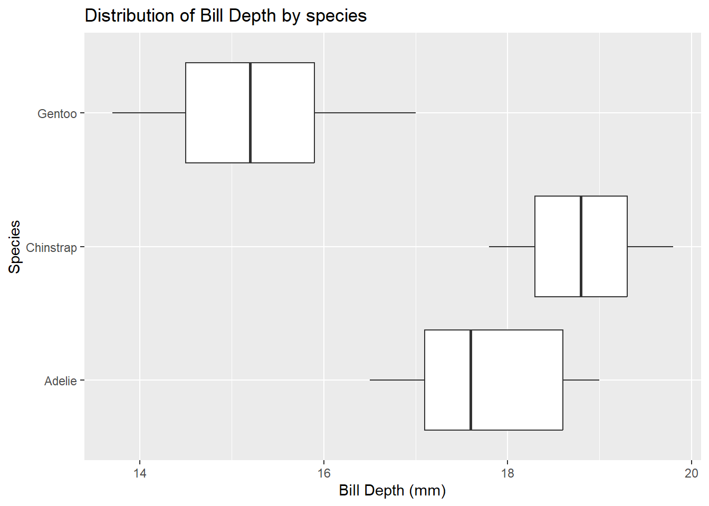

Attaching package: 'kableExtra'
The following object is masked from 'package:dplyr':
group_rows
#Read the penguins_samp1 data file from githubpenguins <-read_csv("https://raw.githubusercontent.com/mcduryea/Intro-to-Bioinformatics/main/data/penguins_samp1.csv")
Rows: 44 Columns: 8
── Column specification ────────────────────────────────────────────────────────
Delimiter: ","
chr (3): species, island, sex
dbl (5): bill_length_mm, bill_depth_mm, flipper_length_mm, body_mass_g, year
ℹ Use `spec()` to retrieve the full column specification for this data.
ℹ Specify the column types or set `show_col_types = FALSE` to quiet this message.
#See the first six rows of the data we've read in to our notebook. Clean up tables with kable extra.penguins %>%head() %>%kable() %>%kable_styling(c("striped","hover"))
species
island
bill_length_mm
bill_depth_mm
flipper_length_mm
body_mass_g
sex
year
Gentoo
Biscoe
59.6
17.0
230
6050
male
2007
Gentoo
Biscoe
48.6
16.0
230
5800
male
2008
Gentoo
Biscoe
52.1
17.0
230
5550
male
2009
Gentoo
Biscoe
51.5
16.3
230
5500
male
2009
Gentoo
Biscoe
55.1
16.0
230
5850
male
2009
Gentoo
Biscoe
49.8
15.9
229
5950
male
2009
The different tables are organized by species, the island the species was found, its bill length and depth, flipper length and depth, the body mass, year of discovery, and sex.
About our data
The data we are working with is a dataset on Penguins, which features the variables: species, island, bill length/depth, flipper length, body mass, sex, and year.
What is the average flipper length by species?
Are there more male or female penguins on each island?
What is the mean body mass per island, species, sex?
What is the ratio of bill length to bill depth for a penguin? What is the overall average of this metric? Does it change by species, sex, or island?
Does average body mass change by year?
Data Manipulation Tools and Strategies
We can look at individual columns in in a data set or subsets of columns in a dataset. If we are only interested in flipper length and species, we can select() those columns
if we want to filter() and only show certain rows, we can do that too.
penguins%>%filter(species =="Chinstrap")
# A tibble: 2 × 8
species island bill_length_mm bill_depth_mm flipper_le…¹ body_…² sex year
<chr> <chr> <dbl> <dbl> <dbl> <dbl> <chr> <dbl>
1 Chinstrap Dream 55.8 19.8 207 4000 male 2009
2 Chinstrap Dream 46.6 17.8 193 3800 fema… 2007
# … with abbreviated variable names ¹flipper_length_mm, ²body_mass_g
#we can see also do bothpenguins%>%filter((body_mass_g ==6000) | (island =="Togersen"))
# A tibble: 0 × 8
# … with 8 variables: species <chr>, island <chr>, bill_length_mm <dbl>,
# bill_depth_mm <dbl>, flipper_length_mm <dbl>, body_mass_g <dbl>, sex <chr>,
# year <dbl>
Answering Our Questions
Most of our questions involve summarizing data, and perhaps summarizing our groups. We can summarize data using the summarize() function and group data using group_by().
# A tibble: 3 × 2
species avg_flipper_length
<chr> <dbl>
1 Adelie 189.
2 Chinstrap 200
3 Gentoo 218.
#Are there more male or female penguinspenguins%>%count(sex)
# A tibble: 2 × 2
sex n
<chr> <int>
1 female 20
2 male 24
#What is the mean body mass per islandpenguins%>%group_by(island)%>%summarize(avg_body_mass_g =mean(body_mass_g))
# A tibble: 3 × 2
island avg_body_mass_g
<chr> <dbl>
1 Biscoe 5099.
2 Dream 3783.
3 Torgersen 3330
#What is the mean body mass per speciespenguins%>%group_by(species)%>%summarize(avg_body_mass_g =mean(body_mass_g))
# A tibble: 3 × 2
species avg_body_mass_g
<chr> <dbl>
1 Adelie 3464.
2 Chinstrap 3900
3 Gentoo 5230.
#What is the mean body mass per sexpenguins%>%group_by(sex)%>%summarize(avg_body_mass_g =mean(body_mass_g))
# A tibble: 2 × 2
sex avg_body_mass_g
<chr> <dbl>
1 female 4258.
2 male 5268.
We can mutate() to add new columns to our data set
#What is the bill length to depth ratiopenguins%>%group_by(species)%>%mutate(bill_ltd_ratio = bill_length_mm / bill_depth_mm)%>%summarize(avg_bill_ltd_ratio =mean(bill_ltd_ratio),median_bill_ltd_ratio =median(bill_ltd_ratio))
penguins%>%ggplot()+geom_histogram(aes(x=flipper_length_mm),bins =15,fill ="forestgreen",color ="black") +labs(title="Distribution of Flipper Length", y="", x ="Flipper Length (mm)",subtitle ="Mean in Black, Median in Purple") +geom_vline(aes(xintercept =mean(flipper_length_mm)), lwd =2, lty ="dashed") +geom_vline(aes(xintercept =median(flipper_length_mm)), fill ="black",color="red", lwd =2, lty ="dashed")
Warning: Using `size` aesthetic for lines was deprecated in ggplot2 3.4.0.
ℹ Please use `linewidth` instead.
Warning in geom_vline(aes(xintercept = median(flipper_length_mm)), fill =
"black", : Ignoring unknown parameters: `fill`
The data is skewed left since the mean is lower than the median
Distribution of Species
penguins%>%ggplot()+geom_bar(mapping =aes(x=island, fill = species)) +labs(title ="Distribution of Species",x="Island",y="Species")
One Numerical and One Categorical: Bill Depth by Species
penguins%>%ggplot() +geom_boxplot(mapping =aes(x=bill_depth_mm, y = species)) +labs(title ="Distribution of Bill Depth by species", x ="Bill Depth (mm)", y ="Species")

Two Numerical Variable: Bill Length vs Bill Depth (scatterplot)
penguins%>%ggplot() +geom_point(aes(x = bill_length_mm, y = bill_depth_mm, color = species))+geom_smooth(aes(x = bill_length_mm, y = bill_depth_mm, color = species), method ="lm")+labs(title ="Comparison of Bill Length vs Bill Depth", x ="Bill Length (mm)", y="Bill Depth(mm)")
`geom_smooth()` using formula = 'y ~ x'
Warning in qt((1 - level)/2, df): NaNs produced
Warning in max(ids, na.rm = TRUE): no non-missing arguments to max; returning
-Inf
Within each species, the longer the beak, the deeper the beak.